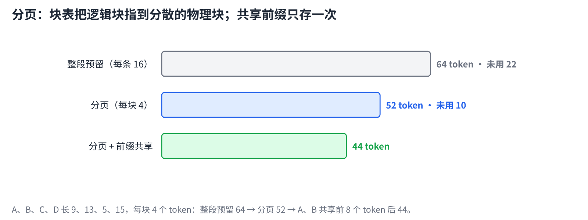
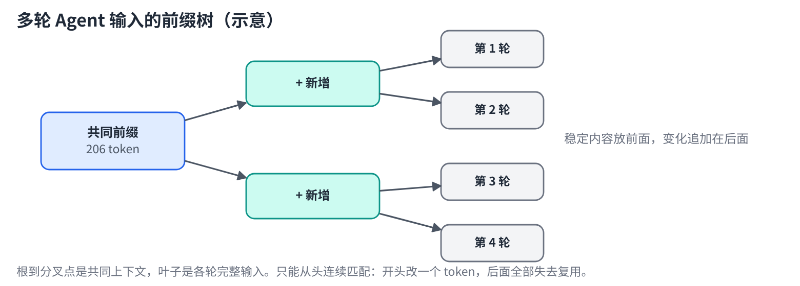
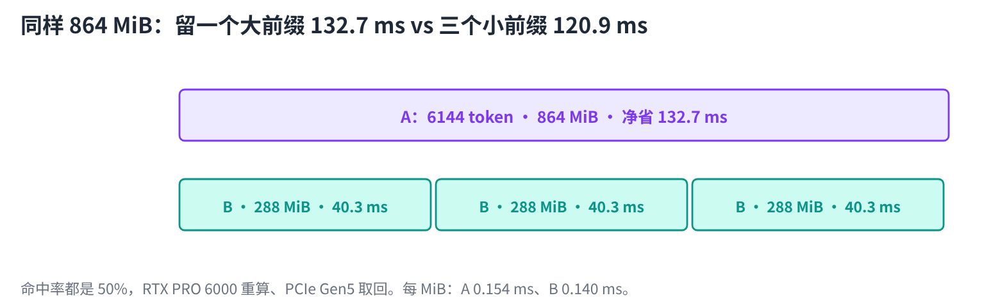
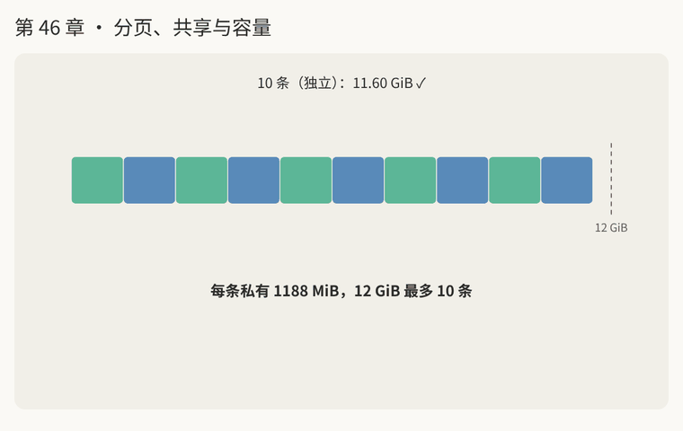

第 46 章 · KV 缓存的分配、复用与释放：分页、共享、留不留
本地运行
git clone https://github.com/wikieden/ai-infra-from-constraints
cd ai-infra-from-constraints/code/notebooks
pip install jupyterlab torch numpy
jupyter lab ch46_kv_cache.ipynb也可以下载后直接用 VS Code 打开 .ipynb 运行。需要 GPU 的章节在 Colab 里选「代码执行程序 → 更改运行时类型 → GPU」。
本章回答：为什么 KV 要像操作系统一样分页？两条请求共用前缀，一条结束了另一条怎么办？16 条长请求共享前缀后，为什么从 19 GB 降到 6 GB？Agent 的多轮对话怎么才能多命中缓存？一个前缀值不值得留，留大的还是留几个小的？
讲解日期：2026-11-24 · 上一章：第 45 章 批处理与请求调度 · 下一章：第 47 章 压缩与卸载
对应原文：materials/ai-infra-book/manuscripts/08-推理优化.md§8.3 L228–L381（图 8-10 到 8-22）
本章缩写：PagedAttention = vLLM 的分页注意力 · 块表 = 逻辑块到物理块的映射 · COW = Copy-on-Write（写时 / 复制）· SWA = Sliding Window Attention（滑动 / 窗口 / 注意力）· CED = DeepSeek V4.1 的因果编码器—解码器结构。全部缩写见 缩写与术语表
讲解
第一步：分页：逻辑上连续，物理上分散（2026-11-24）
类比：活页册。 页码决定阅读顺序，纸可以夹在任何空位，只要目录记着每页在哪；写满一页就从空白页里拿一张。
原文 L232–L264：逻辑块按 token 位置编号（页码），物理块是真正存 KV 的内存，每条请求的块表记逻辑块 → 物理块。长度 \(L\)、每块 \(p\) 个 token，只有最后一块会浪费：
算例：A、B、C、D 长度 9、13、5、15，每条最多 16：
| 做法 | 分配（token） | 未用 |
|---|---|---|
| 整段预留 16 × 4 | 64 | 22 |
| 分页，每块 4 | 12 + 16 + 8 + 16 = 52 | 10 |
| 分页 + A、B 共享前 8 个 token（两块） | 44 |

图 46-1 · 分页减少没用的预留，共享消除重复保存；两者省的是不同部分。
PagedAttention（2023，vLLM）把操作系统分页用到 KV；FlashAttention 组织的是算子内的分块计算，两者管不同的事。
一句话：块表让 KV 不必连续；浪费只在最后一块，块越小越省、块表越大。
第二步：共享、写时复制与释放（2026-11-24）
类比：合租的书。 两人共用一本，记一个借阅人数；一人退租，书留给另一人；谁要在书上做笔记，先复印自己那几页。
原文 L268–L304：
- 引用计数：每个块表指向它算一次引用；最后一个引用释放、且加速器已经不再访问，才回空闲池。
- 写时复制：共享的尾块写了 3 个共同 token，两个分支要各写不同的第 4 个：先复制这 3 个，再各自追加；已满的块继续共享。
- 四分支实验：公共前缀 95 块、每分支私有 9 块：引用 \(4 \times 104 = 416\)，物理块 \(95 + 36 = 131\)，少 69%。
16 条长请求（原文 L290–L296）：共享前 6144 token（864 MiB），每条私有 \(8192 - 6144 + 255 = 2303\) → 2304 token = 324 MiB：
12 GiB 的容量上限从 10 条独立请求涨到 35 条共享请求。
释放的时刻：取消调用约 1.6 ms 返回，但 104 个块要到约 31 ms（已提交的加速器操作做完）才释放。抢占：内存不够时暂停一条、释放它的 KV，之后重算（1 GiB 池多调度了 1805 个 token）。
一句话：共享块用引用计数管生命周期，写之前才复制；释放要等引用归零且加速器用完。
第三步：多轮对话和 Agent 怎样多命中（2026-11-24）
类比：抄写接龙。 只能接着前面已经抄好的部分往下写；开头改一个字，后面全得重抄，哪怕后面的内容一模一样。
原文 L310–L350：前缀复用必须连续从头匹配：前 100 个 token 相同、第 101 个不同，后面即使文字相同也不能复用（依赖的上下文已经不同）。
- 动态时间戳放在最前面：后面的工具定义全部失去复用。稳定的系统提示和工具定义放前面，变化追加到后面。
- 前缀树：根到分叉点是共同上下文，叶子是各自的后缀。
- 8K 上下文追加 1K 工具结果：复用 8K、只处理 1K；改写开头的指令：全部重算；总结成 2K 再追加：上下文变短，但多一次总结和重建。
- 混合注意力：递推状态只能从快照恢复。匹配到第 10,752 个 token、最近快照在 8192，要重算 2560 个；快照越密重算越少、存得越多（KDA 每份约 53.6 MiB）。DeepSeek V4.1 把编码器 SWA 放 DRAM 短期保留、解码器 SWA 只在本轮驻留，长期缓存量约为原来的 1/8。

图 46-2 · 示意：前四轮先共享 206 个 token，后面沿同一路径延伸。输入能复用多少是一回事，状态有没有被留着是另一回事。
场景代码：vLLM 打开前缀缓存，把稳定部分放在提示最前面（真实 API）：
from vllm import LLM, SamplingParams
llm = LLM(model="Qwen/Qwen3-8B", enable_prefix_caching=True)
system = open("system_and_tools.txt").read() # 6144 token 的稳定前缀放最前
prompts = [system + f"\n用户问题：{q}" for q in questions] # 变化的部分追加在后面
outs = llm.generate(prompts, SamplingParams(max_tokens=256))
一句话：复用只沿前缀连续发生；把稳定内容放前面，变化追加在后面。
第四步：前缀值不值得留，留哪个（2026-11-24）
类比：冰箱里放剩菜。 下顿会吃的概率 × （重新做的时间 − 热一下的时间）− 保存的麻烦，大于零才值得放；冰箱满了，先放单位空间最省事的。
原文 L354–L380：
| 前缀 | 大小 | 重算 \(T_r\) | 取回 \(T_f\)（PCIe Gen5） | 命中 50% 净省 | 每 MiB |
|---|---|---|---|---|---|
| A：6144 token | 864 MiB | 307.9 ms | 14.2 ms | 132.7 ms | 0.154 ms |
| B：2048 token | 288 MiB | 94.7 ms | 4.7 ms | 40.3 ms（三个 120.9） | 0.140 ms |
A 的门槛命中率 4.8%（PCIe Gen4 时 10.1%）。同样 864 MiB，留一个 A 比留三个 B 多省：重算时间随前缀长度超线性增长（6144 token 的 prefill 是 2048 的 3.25 倍）。按每 MiB 的期望收益排序。
容量决定能不能留到下次：12 轮 Agent 回放共 19,556 个输入 token：6 GiB 缓存命中 16,304 个，1 GiB 一个也没命中；只是把轮间等待加 0.2 s 没有改变命中。

图 46-3 · 宽度是容量，时间按 RTX PRO 6000 重算和 PCIe Gen5 取回计算。
一句话：前缀的价值 = 命中率 × 省下的重算 − 维护；空间紧时按每 MiB 的期望收益排序。
动画演示：分页、共享与容量

可交互版：animations/46-kv-cache.html（滑块：请求数 1–40；开关：共享 6144 token 前缀；切换：每块 16 / 64 token）。
怎么看：
- 一根横条是 12 GiB 预算，彩色段是每条请求的 KV（第二步）；
- 打开共享后，最左边多一段灰色的公共前缀，其余每条只剩私有部分；
- 右边显示总用量、是否超出 12 GiB 和最多能放几条；
- 播放：独立 10 条（满）→ 独立 16 条（超）→ 共享 16 条（5.91 GiB）→ 共享 35 条。
练习与作答记录
题 1（第一步）：五条序列长度 7、20、33、3、16，每块 8 个 token。各分配多少？总共未用几个槽位？
作答记录：（待作答）
题 2（第二步）：24 条请求，公共前缀 4096 token，每条私有 1024 输入 + 511 个回送输出，每块 16、每 token 144 KiB。共享后总共多少 MiB？独立要多少？
作答记录：（待作答）
题 3（第四步）：前缀 C 重算 200 ms、取回 10 ms、维护 10 ms。命中率至少多少才值得留？命中率 30% 时净省多少？
作答记录：（待作答）
原书练习 8-3、8-4（L306、L380）。想多练可以做。
口诀
活页册页码定顺序，纸夹哪都行；只有最后一页会空；
合租的书记人数，最后一人走才还；要做笔记先复印；
抄写接龙只能从头接，开头改一字后面全重抄；
剩菜值不值得留：下顿吃的概率乘省下的工夫，再按冰箱格子算。
本章复习卡片
I160（分页：64 → 52 → 44，浪费 ≤ \(p - 1\)）、I161（引用计数、写时复制、416 vs 131；16 条共享 6048 MiB、35 条）、I162（前缀连续匹配与 \(V_h = p_h(T_r - T_f) - T_m\)、门槛 4.8%、按每 MiB 排序）。练习做完后，按答错、卡住的地方再补。
附录 · 延伸阅读
留给以后深入学习用，不影响本章主线。★ 是建议先读的。
推荐阅读
| 读什么 | 读哪里 | 读它为了什么 |
|---|---|---|
| ★ AII 第 8 章 | §8.3 L228–L381 | 本章原文 |
| ★ Kwon 等，PagedAttention（SOSP 2023） | §4 | 分页 KV 的出处 |
| Zheng 等，SGLang / RadixAttention（2024） | 前缀树缓存 | 跨请求复用 |
| Marconi（2024） | 混合模型的前缀缓存 | 快照与恢复 |
| DeepSeek V4.1 技术报告 | §3.2.2 | SWA 状态的近似恢复 |
| 第 15 章 多轮交互与 Agent 任务 | 前缀与改写位置 | 前置 |
数学原理
- 上取整浪费：\(p\lceil L/p \rceil - L \in [0, p - 1]\)。
- 引用计数：资源在最后一个持有者释放后回收。
- 期望收益：\(p_h \times\) 收益 \(-\) 固定成本 \(> 0\)。
公式清单
| 公式 | 意思 |
|---|---|
| 浪费 \(= p\lceil L/p \rceil - L\) | 分页尾块 |
| \(M_{\mathrm{KV}} = P + bS\) | 共享前缀 \(P\)、每条私有 \(S\) |
| \(V_h = p_h(T_r - T_f) - T_m\) | 前缀的期望净节省 |
| \(p_h > T_m/(T_r - T_f)\) | 值得保留的门槛 |
代码对照：把本章的数字用代码算一遍
代码
ai-infra/solutions/chapter-code/ch46_kv_cache.py，测试tests/test_ch46.py：
bash cd ai-infra/solutions/chapter-code uv run python ch46_kv_cache.py uv run pytest tests/test_ch46.py
| 讲义 | 写法 | 跑出来 |
|---|---|---|
| 第一步 | paged(lengths, p) |
(52, 10)、(46, 4)、(56, 14) |
| 第二步 | shared_prefix_mib(16)、max_shared() |
6048 MiB、35 条 |
| 第四步 | keep_value(p, Tr, Tf, Tm) |
132.7 / 40.3 ms |
代码里才看得到的 3 件事：
- 6144 个 token 的前缀约 0.906 GB（864 MiB），PCIe Gen5 64 GB/s 取回 14.2 ms，维护按一次换出算同样 14.2 ms。
- 重算时间 307.9 ms 是原文按 96.5 TFLOP、62% MFU 给的值，代码直接用。
- 共享后容量上限是 \(\lfloor (12288 - 864)/324 \rfloor = 35\)。
自己改一改（不影响练习答案）：
- 给
paged加前缀共享：输入每条的共同前缀长度，算节省多少块。 - 用
keep_value画 A、B 在命中率 0–100% 时的曲线，找 A 不如三个 B 的命中率。 - 模拟一个容量固定的 LRU 前缀缓存，看 12 轮对话的命中数。